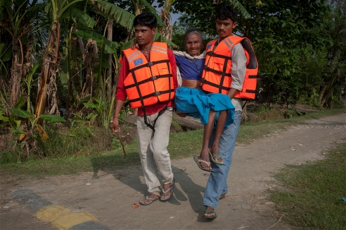

分析: 障がい者が被災者となるとき
10月13日「国連国際防災の日」を前に、OCHAが運営する情報サービス、IRINニュースが配信した記事をご紹介します。
今年のテーマは「障がいと共に生きる人々と災害」。どのようにすれば災害時に障がいを持つ方々のいのちを守り、また適切な緊急支援を行うことができるのでしょうか。東日本大震災の経験も含め、ぜひ議論を深めていきたいと思います。
------------------------
障がい者が被災者となるとき
2013年9月16日付 ネパール・カトマンズ発
起こりうる災害やその際の救援活動、そして支援物資の配布といった情報に素早くアクセスできるようにすること。このことが、障がいを持つ人々にとっての災害リスク軽減と、よりよい支援計画の策定に不可欠であると専門家は指摘しています。
ロンドン大学公衆衛生・熱帯医学大学院で、障がいに関するエビデンス国際センターに勤めるミロスラヴァ・タタリン研究員は「災害時に人々が直面するリスクの多くは、貧困や社会的疎外の結果として生み出されています。すなわちどこに、そしてどのような建物に住んでいるのか、また移動手段等を確保できるのかが、リスクという意味では非常に重要となるのです。」と述べています。
「身体的な障がいがある場合、移動の際に他人の協力が必要になることがあります。その上、災害時の安全確保や対処法に関する基礎的な情報を入手できるということも重要となります。」
研究の結果、障がい者が災害時に最も脆弱なグループの一つとなることが明らかになりました。もし障がいがあることによって、移動やコミュニケーション能力に影響が出れば、いのちを失う、あるいは怪我をするといったリスクに加えて、被災地で孤立してしまうおそれが高まります。そして、現にそこまで来ている人道支援に手が届かなかったり、どのような支援が得られるのかという情報にアクセスすることすらも難しくなるかもしれません。また、障がいを持つ人々にとって情報を得ることが難しいのと同様に、人道支援機関側が障がい者らのニーズを捉えることに苦労することもあります。
途上国における障がい者支援を行う国際組織、クリスチャン・ブラインド・ミッション(CBM)の研究によれば、地域コミュニティや政府が障がいを持つ人々のニーズや能力についての情報を十分持っていないため、防災計画や災害時手順書に、障がい者が含まれていないケースが多く見られるようです。
障がいを持つ人々は、リスク軽減に繋がる実践法や提供されるサービスだけでなく、どのようにすればもっと災害に対して強くなれるかを知っておくべきです。他方、支援者もまた、障がいのある人々がどこに住んでいて、最善のケアを提供できる方法は何かを把握しておかなければなりません。つまり障がい者は、人道的なケアを単に受動的に受けるだけの存在ではなく、むしろ災害リスク軽減という目標に向けた対等な参加者としてみなされるべきだと、いわば「パラダイム転換」を訴える活動家たちは主張しています。
支援者への情報提供
2005年の大地震など、パキスタンで幾つかの災害が発生した後、障がいのある人々に殆ど関心が向けられてこなかったことに、活動家たちは憤りを覚えました。
「災害が発生したらすぐに障がい者に緊急支援を届けられるよう、事前もしくは災害発生時であっても、障がい者とその支援団体(DPOs)を人道支援機関につないでおく必要があることは分かっていました。」自らも障がいを持ち、イスラマバードのDPO特別才能交流プログラム(STEP)を率いている、ディレクターのアティフ・シェイク氏はこう言っています。
STEPは、ハンディキャップ・インターナショナルなど国際組織の支援を受けながら、「障がいに関する情報リソースセンター(IRCD)」を運営しています。
2009年にパキスタンで設立されたIRCDは、政府発行のIDカード番号や、身体・精神・知的障がいといった基本情報や住所など、障がい者についての全国的なデータベースを有しています。データはDPOsのネットワークを通して集められ、確かにSTEP自身が認めるように科学的でも包括的でもないものの、それでも役に立つものです。
シェイク氏はこうも述べています。「2010年に発生したパキスタン洪水の際、少なくとも登録者の居住地が分かったため、このデータベースは役立ちました。活動を行う人道支援者に、障がいを持つ人々がどこにいて、保健衛生から食糧支援、医療ケアに至るまで、何を必要としているのかを知らせるなど、情報はあらゆる支援活動になくてはならないものなのです。」
パキスタンのデータベースは双方向性を持つよう設計され、障がい者に関する情報をエイドワーカーに対して伝えると同時に、障がい者には人道支援サービスについての情報を提供しています。そしてこのデータベースは、食糧配給システムや出張医療サービス、現金・食糧支給、そして障がい者に適したキャッシュ・フォー・ワークプログラム（労働の対価として現金を給付する制度）についての情報を障がい者に伝えるという意味で効果的に機能した、と専門ジャーナルのフォースド・マイグレーション・レビューで評されています。
他方、「スフィア・プロジェクト―人道憲章と人道対応に関する最低基準」は、障がい者への配慮がきちんとなされているかという観点から、ニーズアセスメントや支援計画策定、そして事業監理や評価を行う際、データを細分化して集めるよう人道支援関係者に促しています。
しかし、国際組織ハンディキャップ・インターナショナルは、そもそも多様な人々を「障がい者」としてひとまとめにして主流化しようとするスフィア勧告は不十分だと批評しており、障がいの種類にも留意するなど、もっと特化した対応を要請しています。
障がいを持つ人々への情報提供
ベトナムの活動家たちは、警笛や警告旗のような一般的に使われる早期警報システムの幾つかは、聴力や視力に障がいを持つ人々にとって、あまり役に立たないということを指摘してきました。
2005年に採択された「兵庫行動枠組」はハザードに対する脆弱性や災害リスクの削減を促進するためのもので、そこでは「脆弱な立場におかれる人々に対しても、適切な訓練や教育機会へのアクセスを平等に提供すること」を担保するとあります。しかし、障がいについては特記されていません。
他方、今年災害リスク削減のためのグローバル・プラットフォームがスイスのジュネーブで開催されましたが、そこに参加した専門家らは、障がい者に対する言及がないことを嘆き、障がいによって災害時のリスクがより増大するのは明らかだと主張しています。
現在の兵庫行動枠組みは来年度に期限を迎えるため、2015年以降の枠組についての協議が進んでいます。そしてそこには、障がいを考慮に入れた新たな基準作りのための実質的な議論も含まれています。
学童
国連教育科学文化機関(UNESCO)は、途上国に住み障がいを持つ子どもたちの実に98%が学校に行けず、そのため学校で実施されている災害リスク軽減(DRR)教育を受けることができていないと推計しています。
また国連児童基金(UNICEF)に設置されている「人道アクションをより包摂的にするためのタスクフォース」は、障がいを持つ子どもたち向けのサービスを紹介する情報にきちんとアクセスできるようにすることを、主要原則の1つと定めました。
他方インドネシアでは、ドイツの社会福祉団体であるアルバイター・サマリター・ブントが、障がいを持つ子どもたちに対して、基礎的な情報の共有や実践的な訓練といったDRRプログラムを、学校の枠外で運営しています。
情報ギャップを埋めるために
災害時における障がい者の死亡データに関する体系的な記録はありません。しかし、2011年3月に発生した東日本大震災では、障がい者の死亡率が障がいを持たない人々に比べて2倍であったことが分かっています。
国連国際防災戦略事務局(UNISDR)は、これまでにも世界中の障がい者団体と連携し、特に今年10月の「国連国際防災の日」のテーマとして「障がいと共に生きる人々と災害」を取り上げています。
現在UNISDRは、障がい者とその支援者が、災害時の備えと必要となる資源についてどの程度情報を持っているのかというデータを集めています。
UNISDRのデビッド・シン氏は、これまでにオンライン調査（また少なくとも２カ国では紙ベースの調査）で集まった2,000件以上の初期データから明らかになった最大のポイントとして、「障がい者の70%から80%は、いかなる形であれDRRプログラムに参加したことが一度もないということ」だと述べています。
長年大地震の可能性が懸念されているネパールでは、ハンディキャップ・インターナショナルが、災害時に人道支援機関との窓口を務められるような、カトマンズの障がい者団体を特定しようとしています。
「災害への備えと災害時支援活動の両方において、障がいを持つ人々も他の人々と同様、情報やサービスにアクセス出来るようにしなければなりません」と、ハンディキャップ・インターナショナルのネパール・カントリーディレクター、サラ・ブリン氏は指摘しています。
ネパール政府の災害リスク管理戦略でも、障がいを持つ人々を対象とした特別なDRRプログラムについて、優先した取り組みが求められています。
また世界のそのほかの地域でも、障がい者やその支援者を含む、より脆弱な立場に置かれるとされる人々を対象とした災害リスク軽減のため、携帯電話技術の開発等が進んでいます。
あるパキスタンのテキストメッセージプログラムでは、2011年に最南端のシンド州で発生した洪水被害を乗り越えた生存者（障がい者のみならず識字能力の低い人々も含む）のため、救援活動に対するフィードバックをより得やすくなるよう、0から9の番号を割り当てて苦情を伝えるナンバリングシステムが導入されました。
パキスタンの活動家、シェイク氏は「災害被害にさらされる多くの途上国に住む障がい者は、災害時にしばしば『役に立てない』と感じずにはいられない状況に置かれます。しかし、彼らも支援活動に参加することが出来るし、むしろ参加しなければならないということを理解して、その上でこうしたことをどんどん要求していく必要があるのです。」と述べています。
世界保健機関(WHO)によれば、世界人口のおよそ15パーセントにあたる人々が障がいと共に生活していると見られています。
原文(英語)>>